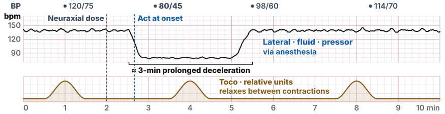
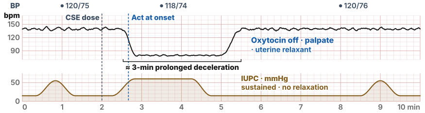
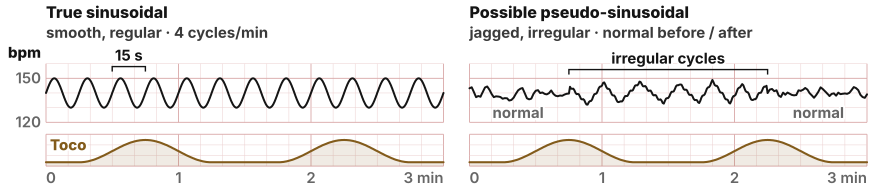
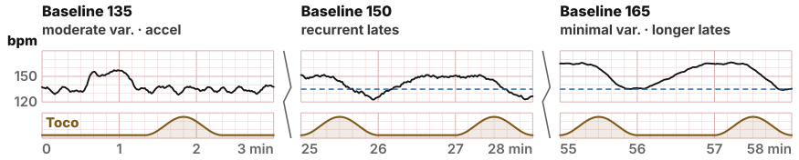

| Context · clue | Think | Act now |
|---|---|---|
| After ROM / amniotomy; high presenting part | Cord prolapse | Examine now. Cord felt → elevate the presenting part; do not replace the cord; fastest safe birth 3 · A |
| Pain; tender or firm uterus ± bleeding | Abruption | Maternal resuscitation, hemorrhage response 2 · A Bleeding may be concealed; normal ultrasound does not exclude it. |
| TOLAC or other uterine scar | Uterine rupture | Abnormal FHR is often the first sign; loss of station, pain, scar tenderness, bleeding, shock may be absent. Suspected → emergency operative delivery. |
| Minutes after neuraxial dose / CSE | Low BP · hypertonus | Check BP and uterine relaxation together → B |
| Excess or sustained contraction | Tachysystole | Oxytocin off; remove dinoprostone; uterine relaxant 26 · E Never delays emergent birth. |
| Rapid descent, pushing | Head / cord compression | Station, position; fastest safe birth; modify pushing → C. Near birth ≠ benign. |
| Seizure, hypoxemia, collapse | Maternal cause | Stabilize the mother first 2 · B 2 · D FHR often recovers after an eclamptic seizure; persistent → abruption? delivery? |


| Drug: record dose + time | May see | Assess · act (Category unchanged) |
|---|---|---|
| Systemic opioid | ↓ variability, ↓ accels | Maternal breathing, sedation, SpO₂; other causes. |
| Nalbuphine, butorphanol | Sinusoidal-like; nalbuphine: severe, prolonged bradycardia | New slowing or odd waveform → urgent review (A, E). |
| Magnesium | Small ↓ baseline, variability, accels | Does not explain Category III or recurrent decels 2 · B |
| Betamethasone | Transient ↓ variability, accels; often days 2–3 | Note timing; new decels need their own work-up. |
| Cocaine, methamphetamine | No diagnostic pattern | BP, bleeding, uterine pain / tone → abruption? |

